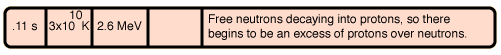
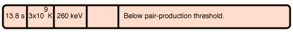

This illustration is active: click on any part of it for further details.
Modeling of earlier events
Big Bang time line
Calculation of expansion time
Index
Model even earlier times
HyperPhysics
*****
Astrophysics
R Nave
Go Back